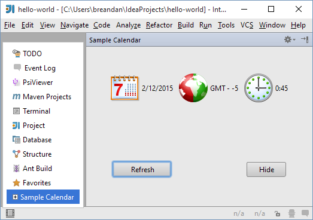

Tool Windows
Tool Windows
Tool windows are child windows of the IDE used to display information. These windows generally have their own toolbars (referred to as tool window bars) along the outer edges of the main window containing one or more tool window buttons, which activate panels displayed on the left, bottom and right sides of the main IDE window. For detailed information about tool windows, please see IntelliJ IDEA Web Help .
Each side contains two tool window groups, the primary and the secondary one, and only one tool window from each group can be active at a time.
Each tool window can show multiple tabs (or “contents”, as they are called in the API). For example, the Run tool window displays a tab for each active run configuration, and the Changes/Version Control tool window displays a fixed set of tabs depending on the version control system used in the project.
There are two main scenarios for the use of tool windows in a plugin. In the first scenario (used by the Ant and Commander plugins, for example), a tool window button is always visible, and the user can activate it and interact with the plugin functionality at any time. In the second scenario (used by the Analyze Dependencies action, for example), the tool window is created to show the results of a specific operation, and can be closed by the user after the operation is completed.
In the first scenario, the tool window is registered in plugin.xml using the com.intellij.toolWindow extension point.
The extension point attributes specify all the data which is necessary to display the tool window button:
-
The
idof the tool window (corresponds to the text displayed on the tool window button) -
The
anchor, meaning the side of the screen on which the tool window is displayed (“left”, “right” or “bottom”) -
The
secondaryattribute, specifying whether the tool window is displayed in the primary or the secondary group -
The
iconto display on the tool window button (13x13 pixels)
In addition to that, specify the factory class - the name of a class implementing the
ToolWindowFactory
interface.
When the user clicks on the tool window button, the createToolWindowContent() method of the factory class is called, and initializes the UI of the tool window.
This procedure ensures that unused tool windows don’t cause any overhead in startup time or memory usage: if a user does not interact with the tool window of a plugin, no plugin code will be loaded or executed.
If the tool window of a plugin doesn’t need to be displayed for all projects:
- For versions 2020.1 and later, also implement the
isApplicable(Project)method. - For versions 2019.3 and earlier, also specify the
conditionClassattribute for the<toolWindow>element: the FQN of a class implementingCondition<Project>, which can be the same class as the tool window factory implementation. See Creation of Plugin for more information.
Note the condition is evaluated only once when the project is loaded; to show and hide a tool window dynamically while the user is working with the project use the second method for tool window registration.
The second method involves simply calling
ToolWindowManager.registerToolWindow()
from the plugin code.
The method has multiple overloads that can be used depending on the task.
When using an overload that takes a component, the component becomes the first content (tab) displayed in the tool window.
Displaying the contents of many tool windows requires access to the indices.
Because of that, tool windows are normally disabled while building indices, unless true is passed as the value of canWorkInDumbMode to the registerToolWindow() function.
As mentioned previously, tool windows can contain multiple tabs, or contents.
To manage the contents of a tool window, call
ToolWindow.getContentManager().
To add a tab (content), first create it by calling
ContentManager.getFactory().createContent(),
and then to add it to the tool window using
ContentManager.addContent().
A plugin can control whether the user is allowed to close tabs either globally or on a per-tab basis.
The former is done by passing the canCloseContents parameter to the registerToolWindow() function, or by specifying
canCloseContents="true" in plugin.xml. The default value is false; calling setClosable(true) on ContentManager content will be ignored unless canCloseContents is explicitly set.
If closing tabs is enabled in general, a plugin can disable closing of specific tabs by calling
Content.setCloseable(false).
How to Create a Tool Window?
The IntelliJ Platform provides the com.intellij.toolWindow extension point to create and configure custom tool windows. This extension point is declared using the ToolWindowEP bean class.
Creation of Plugin
To create a plugin that displays a custom tool window, perform the following steps:
- In a plugin project, create a class implementing
ToolWindowFactory. - In this class, override the
createToolWindowContentmethod. This method specifies the content for the tool window. - In the plugin configuration file
plugin.xml, create the<extensions defaultExtensionNs="com.intellij">...</extensions>section. - To this section, add the
<toolWindow>element, and for this element, set the following attributes declared in theToolWindowEPbean class:id(required): specifies the tool window caption.anchor(required): specifies the tool window bar where the tool window button will be displayed. Possible values: “left”, “right”, or “bottom.”secondary(optional): whentrue, the tool window button will be shown on the lower part of the tool window bar. Default value isfalse.factoryClass(required): specifies the class implementing theToolWindowFactoryinterface (see Step 1).icon(optional): specifies path to the icon that identifies the tool window, if any.conditionClass(optional): specifies a class that implementsCondition<Project>. Using this class, define conditions to be met to display tool window button. When returningfalse, the tool window button is not displayed on tool window bar.
To clarify the above procedure, consider the following fragment of the plugin.xml file:
<extensions defaultExtensionNs="com.intellij">
<toolWindow id="My Sample Tool Window" icon="/myPackage/toolWindowIcon.svg" anchor="right" factoryClass="myPackage.MyToolWindowFactory"/>
</extensions>
Sample Plugin
To clarify how to develop plugins that create tool windows, consider the toolWindow sample plugin available in the code_samples directory of the SDK documentation. This plugin creates the Sample Calendar tool window that displays the system date, time and time zone.
To run the toolWindow plugin
- Start IntelliJ IDEA and open the tool_window project saved into the code_samples/tool_window directory.
- Ensure that the project settings are valid for the environment. If necessary, modify the project settings. To view or modify the project settings, open the Project Structure dialog.
- Run the plugin by choosing the Run | Run on the main menu. If necessary, change the Run/Debug Configurations.
The plugin creates the Sample Calendar tool window. When opened, this tool window is similar to the following screen:
